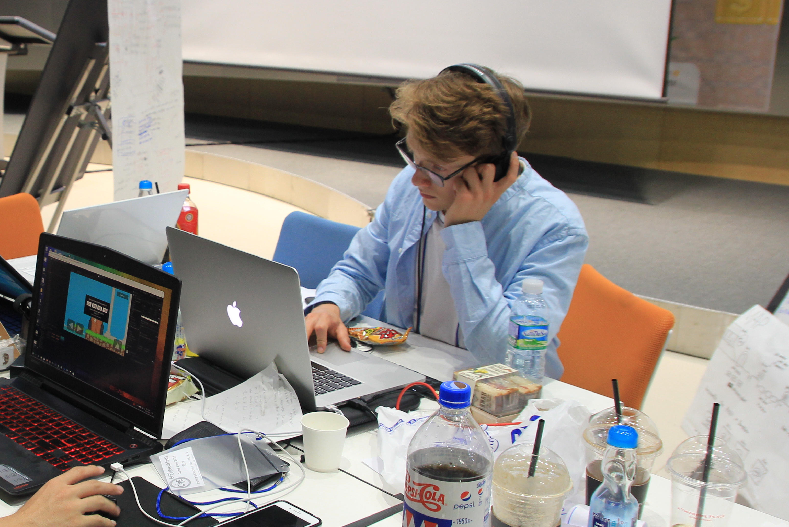

About me
Hi, im Stijn de Koning; composer, sound designer and (audio) software programmer. Im currently a student at the University Of Arts Utrecht, where i study Music and Technology
My portfolio

Contact
sdk.stijn@gmail.com
Amsterdam, Netherlands
Music & Technology, University of Arts Utrecht
Soundcloud